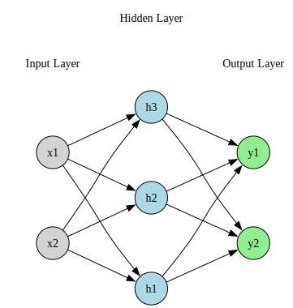

import torch
import torch.nn as nn
import torch.optim as optim
import pandas as pd
import matplotlib.pyplot as plt
import graphviz
from graphviz import Digraph
from IPython.display import display, MarkdownSimple Feedforward Neural Network
Packages
Introduction
In this notebook, we explore one full forward pass of a simple feedforward neural network. The network architecture consists of:
- 2 input neurons
- 1 hidden layer with 3 neurons and ReLU activation
- 2 output neurons (no activation, suitable for regression)
We manually specify the weights, biases, and learning rate.
Neural Network Setup
We consider a simple feedforward neural network with 2 input neurons, 1 hidden layer with 3 neurons, and 2 output neurons. The following describes its structure:
Input vector:
\[\mathbf{x} = \begin{bmatrix} x_1 \\ x_2 \end{bmatrix} \in \mathbb{R}^2\]Weight matrices and bias vectors:
Hidden layer weights: \[ W^{(1)} = \begin{bmatrix} W^{(1)}_{11} & W^{(1)}_{12} \\ W^{(1)}_{21} & W^{(1)}_{22} \\ W^{(1)}_{31} & W^{(1)}_{32} \end{bmatrix} \in \mathbb{R}^{3 \times 2}, \quad \mathbf{b}^{(1)} = \begin{bmatrix} b^{(1)}_1 \\ b^{(1)}_2 \\ b^{(1)}_3 \end{bmatrix} \in \mathbb{R}^3 \]
Output layer weights: \[ W^{(2)} = \begin{bmatrix} W^{(2)}_{11} & W^{(2)}_{12} & W^{(2)}_{13} \\ W^{(2)}_{21} & W^{(2)}_{22} & W^{(2)}_{23} \end{bmatrix} \in \mathbb{R}^{2 \times 3}, \quad \mathbf{b}^{(2)} = \begin{bmatrix} b^{(2)}_1 \\ b^{(2)}_2 \end{bmatrix} \in \mathbb{R}^2 \]
Forward Pass
Hidden layer (before activation):
\[\mathbf{z}^{(1)} = W^{(1)} \mathbf{x} + \mathbf{b}^{(1)}\]Hidden layer activation (ReLU):
\[\mathbf{h} = \phi(\mathbf{z}^{(1)}) \quad \text{(applied elementwise)}\]Output layer:
\[\mathbf{y} = W^{(2)} \mathbf{h} + \mathbf{b}^{(2)}\]
Combined Expression
The full network can be written as: \[ \mathbf{y} = W^{(2)} \cdot \phi(W^{(1)} \mathbf{x} + \mathbf{b}^{(1)}) + \mathbf{b}^{(2)} \]
Target Function
The target output vector is defined as: \[ \mathbf{t} = f(x_1, x_2) = \begin{bmatrix} x_1^2 + x_2^2 \\ x_1 \cdot x_2 \end{bmatrix} \]
Loss Function
We use the mean squared error (MSE) loss (with factor $ \():\)$ = | - |^2 = _{i=1}^2 (y_i - t_i)^2 $$
Diagram
The network can be represented diagramatically by the following:
def draw_neural_net():
dot = Digraph(format='png')
dot.attr(rankdir='LR', nodesep='1.0')
# Input layer
input_nodes = ['x1', 'x2']
for node in input_nodes:
dot.node(node, shape='circle', style='filled', fillcolor='lightgray')
# Hidden layer
hidden_nodes = ['h1', 'h2', 'h3']
for node in hidden_nodes:
dot.node(node, shape='circle', style='filled', fillcolor='lightblue')
# Output layer
output_nodes = ['y1', 'y2']
for node in output_nodes:
dot.node(node, shape='circle', style='filled', fillcolor='lightgreen')
# Add a subgraph for each layer to group and rank nodes
with dot.subgraph() as s:
s.attr(rank='same')
s.node('input_label', label='Input Layer', shape='plaintext')
s.edge('input_label', 'x1', style='invis')
s.edge('input_label', 'x2', style='invis')
with dot.subgraph() as s:
s.attr(rank='same')
s.node('hidden_label', label='Hidden Layer', shape='plaintext')
s.edge('hidden_label', 'h1', style='invis')
s.edge('hidden_label', 'h2', style='invis')
s.edge('hidden_label', 'h3', style='invis')
with dot.subgraph() as s:
s.attr(rank='same')
s.node('output_label', label='Output Layer', shape='plaintext')
s.edge('output_label', 'y1', style='invis')
s.edge('output_label', 'y2', style='invis')
# Connect input to hidden
for i_node in input_nodes:
for h_node in hidden_nodes:
dot.edge(i_node, h_node)
# Connect hidden to output
for h_node in hidden_nodes:
for o_node in output_nodes:
dot.edge(h_node, o_node)
return dot
# Display the diagram inline
display(draw_neural_net())
Running the Neural Network For One Iteration Using Pytorch
We initialize the neural network with the following values:
The input vector \(\mathbf{x} \in \mathbb{R}^2\) is:
\[ \mathbf{x} = \begin{bmatrix} 1.0 \\ 2.0 \end{bmatrix} \]
The target vector \(\mathbf{t} \in \mathbb{R}^2\) is:
\[ \mathbf{t} = \begin{bmatrix} 5.0 \\ 2.0 \end{bmatrix} \]
Weight matrix \(W^{(1)} \in \mathbb{R}^{3 \times 2}\):
\[ W^{(1)} = \begin{bmatrix} 0.1 & -0.2 \\ 0.4 & \phantom{-}0.1 \\ -0.3 & \phantom{-}0.2 \end{bmatrix} \]
Bias vector \(\mathbf{b}^{(1)} \in \mathbb{R}^3\):
\[ \mathbf{b}^{(1)} = \begin{bmatrix} 0.0 \\ 0.0 \\ 0.0 \end{bmatrix} \]
Weight matrix \(W^{(2)} \in \mathbb{R}^{2 \times 3}\):
\[ W^{(2)} = \begin{bmatrix} 0.2 & -0.1 & \phantom{-}0.3 \\ -0.3 & \phantom{-}0.5 & \phantom{-}0.1 \end{bmatrix} \]
Bias vector \(\mathbf{b}^{(2)} \in \mathbb{R}^2\):
\[ \mathbf{b}^{(2)} = \begin{bmatrix} 0.0 \\ 0.0 \end{bmatrix} \]
# Define the updated neural network class for the (2 -> 3 -> 2) architecture
class TwoLayerNN(nn.Module):
def __init__(self):
super(TwoLayerNN, self).__init__()
# Manually define parameters so we can initialize them explicitly
self.W1 = nn.Parameter(torch.tensor([[0.1, -0.2],
[0.4, 0.1],
[-0.3, 0.2]], dtype=torch.float32)) # (3, 2)
self.b1 = nn.Parameter(torch.zeros(3, dtype=torch.float32)) # (3,)
self.W2 = nn.Parameter(torch.tensor([[0.2, -0.1, 0.3],
[-0.3, 0.5, 0.1]], dtype=torch.float32)) # (2, 3)
self.b2 = nn.Parameter(torch.zeros(2, dtype=torch.float32)) # (2,)
def forward(self, x):
z1 = self.W1 @ x + self.b1.unsqueeze(1) # (3,1)
h = torch.relu(z1) # (3,1)
z2 = self.W2 @ h + self.b2.unsqueeze(1) # (2,1)
return z2, h, z1 # output, hidden activation, hidden pre-activation# Initialize model
model = TwoLayerNN()# Input and target
x = torch.tensor([[1.0], [2.0]]) # shape (2,1)
t = torch.tensor([[5.0], [2.0]]) # target outputWe use a learning rate of:
\[ \eta = 0.01 \]
# Learning rate
eta = 0.01We run the neural network using the innitial weights and input vector and calculate the loss:
# Forward pass
y, h, z1 = model(x)
loss = 0.5 * torch.sum((y - t) ** 2)We then compute the backpropagation equations:
Backpropagate to Output Layer
\[ \delta^{(2)} = \frac{\partial \mathcal{L}}{\partial \mathbf{y}} = \mathbf{y} - \mathbf{t} \]
Gradients for Output Layer Parameters
Weights:
\[ \frac{\partial \mathcal{L}}{\partial W^{(2)}} = \left( \frac{\partial \mathcal{L}}{\partial \mathbf{y}} \right) \cdot \left( \frac{\partial \mathbf{y}}{\partial W^{(2)}} \right) = (\mathbf{y} - \mathbf{t}) \cdot \mathbf{h}^\top \]
Biases:
\[ \frac{\partial \mathcal{L}}{\partial \mathbf{b}^{(2)}} = \left( \frac{\partial \mathcal{L}}{\partial \mathbf{y}} \right) \cdot \left( \frac{\partial \mathbf{y}}{\partial \mathbf{b}^{(2)}} \right) = \mathbf{y} - \mathbf{t} \]
Backpropagate to Hidden Layer
Gradient w.r.t. hidden activations:
\[ \frac{\partial \mathcal{L}}{\partial \mathbf{h}} = \left( \frac{\partial \mathcal{L}}{\partial \mathbf{y}} \right) \cdot \left( \frac{\partial \mathbf{y}}{\partial \mathbf{h}} \right) = (W^{(2)})^\top (\mathbf{y} - \mathbf{t}) \]
Define hidden layer error:
\[ \delta^{(1)} = \left( \frac{\partial \mathcal{L}}{\partial \mathbf{z}^{(1)}} \right) = \left( \frac{\partial \mathcal{L}}{\partial \mathbf{h}} \right) \odot \left( \frac{\partial \mathbf{h}}{\partial \mathbf{z}^{(1)}} \right) = \left( \frac{\partial \mathcal{L}}{\partial \mathbf{h}} \right) \odot \phi'(\mathbf{z}^{(1)}) = (W^{(2)})^\top (\mathbf{y} - \mathbf{t}) \odot \phi'(\mathbf{z}^{(1)}) \]
Gradients for Hidden Layer Parameters
Weights:
\[ \frac{\partial \mathcal{L}}{\partial W^{(1)}} = \left( \frac{\partial \mathcal{L}}{\partial \mathbf{z}^{(1)}} \right) \cdot \left( \frac{\partial \mathbf{z}^{(1)}}{\partial W^{(1)}} \right) = \delta^{(1)} \cdot \mathbf{x}^\top \]
Biases:
\[ \frac{\partial \mathcal{L}}{\partial \mathbf{b}^{(1)}} = \left( \frac{\partial \mathcal{L}}{\partial \mathbf{z}^{(1)}} \right) = \delta^{(1)} \]
# Backward pass
loss.backward()After computing the gradients of the loss function with respect to all parameters, we update the weights and biases using gradient descent:
Output layer weights and biases:
\[ W^{(2)} \leftarrow W^{(2)} - \eta \cdot \frac{\partial \mathcal{L}}{\partial W^{(2)}} \]
\[ \mathbf{b}^{(2)} \leftarrow \mathbf{b}^{(2)} - \eta \cdot \frac{\partial \mathcal{L}}{\partial \mathbf{b}^{(2)}} \]
Hidden layer weights and biases:
\[ W^{(1)} \leftarrow W^{(1)} - \eta \cdot \frac{\partial \mathcal{L}}{\partial W^{(1)}} \]
\[ \mathbf{b}^{(1)} \leftarrow \mathbf{b}^{(1)} - \eta \cdot \frac{\partial \mathcal{L}}{\partial \mathbf{b}^{(1)}} \]
# Manually update weights and biases using gradients
with torch.no_grad():
model.W1 -= eta * model.W1.grad
model.b1 -= eta * model.b1.grad
model.W2 -= eta * model.W2.grad
model.b2 -= eta * model.b2.grad# Prepare to display updated weights and biases
updated_params = {
"W1": model.W1.detach().numpy(),
"b1": model.b1.detach().numpy(),
"W2": model.W2.detach().numpy(),
"b2": model.b2.detach().numpy(),
"output y": y.detach().numpy().flatten(),
"loss": loss.item()
}W1_df = pd.DataFrame(updated_params["W1"], columns=["x1", "x2"], index=["h1", "h2", "h3"])
W2_df = pd.DataFrame(updated_params["W2"], columns=["h1", "h2", "h3"], index=["y1", "y2"])
b1_df = pd.DataFrame(updated_params["b1"], index=["h1", "h2", "h3"], columns=["b1"])
b2_df = pd.DataFrame(updated_params["b2"], index=["y1", "y2"], columns=["b2"])The updated weights and biases are:
# Display all updated parameters nicely
display(Markdown("### Updated Parameters"))
display(Markdown("**Hidden Layer Weights (W1):**"))
display(W1_df)
display(Markdown("**Hidden Layer Biases (b1):**"))
display(b1_df)
display(Markdown("**Output Layer Weights (W2):**"))
display(W2_df)
display(Markdown("**Output Layer Biases (b2):**"))
display(b2_df)Updated Parameters
Hidden Layer Weights (W1):
| x1 | x2 | |
|---|---|---|
| h1 | 0.10000 | -0.20000 |
| h2 | 0.40342 | 0.10684 |
| h3 | -0.28322 | 0.23356 |
Hidden Layer Biases (b1):
| b1 | |
|---|---|
| h1 | 0.00000 |
| h2 | 0.00342 |
| h3 | 0.01678 |
Output Layer Weights (W2):
| h1 | h2 | h3 | |
|---|---|---|---|
| y1 | 0.2 | -0.06982 | 0.30503 |
| y2 | -0.3 | 0.51014 | 0.10169 |
Output Layer Biases (b2):
| b2 | |
|---|---|
| y1 | 0.0503 |
| y2 | 0.0169 |